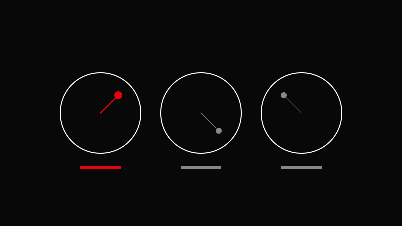

AVA CREATORS TOOLKIT · COLOR GRADING
COLOR WHEELS
Lift, Gamma, Gain
Lift, Gamma, Gain

Gain adjusts highlights. Use small adjustments to avoid breaking the image.
Balance exposure with Lift/Gamma/Gain.
Adjust color balance.
Add contrast.
Refine skin tones.
Use scopes, not your eyes alone.
Crushing shadows too early.